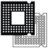
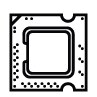
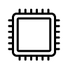
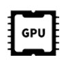

Επεξεργαστής Intel Core i7 13700K (1700/3.4 GHz/30 MB)
Τιμή: 470,50€
Κωδικός Tech4u: 41502
Περιγραφή:
Με 16 πυρήνες, 24 threads και συχνότητα λειτουργίας έως 5,4GHz.
Ενσωματώνει 30MB Intel Smart Cache, 24MB L2 Cache ενώ το PBP (Processor Base Power) του έχει
αξιολογηθεί στα 125W.
Χαρακτηριστικά
| Τεχνικά Χαρακτηριστικά | |
|---|---|
| Μοντέλο Επεξεργαστή | 13700KF |
| Socket | 1700 |
| Αριθμός Πυρήνων Eπεξεργαστή | 16 |
| Απόδοση | |
| Ταχύτητα Επεξεργαστή | 3.40 GHz |
| Maximum Frequency | 5.4 GHz |
| Cache | 30 MB |
| Αρχιτεκτονική | 10 nm |
| 64 Bit | Ναι |
| Γραφικά Επεξεργαστή | |
|---|---|
| Μοντέλο Κάρτας Γραφικών | Intel UHD Graphics 770 |
| Ενσωματωμένη Κάρτα Γραφικών | Ναι |
| Γενικά Χαρακτηριστικά | |
| Κωδική Ονομασία | Raptor Lake |
| Cooling Device | Όχι |
| Συσκευασία | Box |
Socket
LGA1700
Το Socket LGA1700 είναι ειδικά σχεδιασμένο για τους 13ης γενιάς επεξεργαστές της Intel®, με στόχο τις βελτιωμένες επιδόσεις και την άριστη συνεργασία του επεξεργαστή με το υπόλοιπο σύστημα
Cores
16C/24T
Ενσωματώνει 16x φυσικούς πυρήνες (8x Performance cores και 8x Efficient cores) και 24x threads (χάρη στην τεχνολογία Intel® Hyper-Threading) για την αποδοτικότερη εκμετάλλευση των πόρων το και τη μέγιστη δυνατή απόδοση σε μονονηματικές και πολυνηματικές διεργασίες.
Cache
30ΜΒ Intel® Smart Cache & 24MB L2 Cache (Total)
O επεξεργαστής διαθέτει 30MB Intel® Smart Cache και 24MB L2 Cache συνολικά (μειώνει την υστέρηση, καθώς επιτρέπει την αποθήκευση περισσότερων δεδομένων για επεξεργασία πριν από την πρόσβαση στην κύρια μνήμη).
Συχνότητα λειτουργίας
Έως 5,4GHz (Turbo Boost Max)
Η συχνότητα λειτουργίας του επεξεργαστή είναι 3,5GHz έως 5,4GHz για τους πυρήνες P και 2,5GHz έως 4,2GHz για τους πυρήνες E χάρη στην τεχνολογία Intel® Turbo Boost Max Technology 3.0.
Κάρτα γραφικών
Intel® UHD 770 Graphics
Τα ενσωματωμένα γραφικά Intel® UHD Graphics 770 (Max. Clock 1.600MHz) προσφέρουν υψηλής ευκρίνειας εικόνα και υποστηρίζουν έως 4x οθόνες 4K60 και έως 8K60 HDR video.